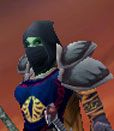

Sarelia
Age : 19
Sexe : Femme
Race : Orc
Faction : Horde
Formation : Voleur
Description : Le chaman avait remarqué le corps étendu sur la plage, sans doute guidé par de fugitifs reflets métalliques en cette heure tardive. L’essence de la vie lui appris immédiatement qu’elle n’était pas morte, cette orque léchée par les vagues. Tankor entreprit donc de la ramener à son refuge, mais au moment de la saisir, le sable révéla sa tunique. Le mystique frissonna en découvrant l’œil doré qui le fixait intensément.
La fumée faisait peu à peu son œuvre, et il la vit émerger d’un sommeil sans rêves. A la lueur d’un simple feu de bois, il aperçut ses yeux d’un vert profond, nullement empreints de surprise. Le chaman lui porta un bol de bouillon aux lèvres, tout en scrutant cette invitée imprévue. Silencieuse depuis son réveil, elle murmura enfin: « Prophète ? »
« Les esprits de l’eau n’ont pas voulu de toi et t’ont rejetée à terre. Parle-moi de la marque que tu portes, et peut-être pourrai-je t’aider. » En découvrant qu’il n’était pas celui qu’elle espérait, l’orque s’était refermée, consentant seulement à lui donner son nom. Tankor tentait d’en savoir plus sur la jeune aventurière qui regardait au loin, en direction de la mer. L’étendue d’eau luisait faiblement, à peine éclairée par l’astre nocturne. Le chaman se sentit découragé, et se dirigea vers sa couche. Il lui avait laissé une peau confortable pour envelopper son corps affaibli. C’est à cet instant qu’elle parla, enfin, autant à lui qu’au ciel sans visage.
« Je suis née de l’autre côté de cette mer. »
« C’était le calme éprouvant après la tempête. Un camp, immense, perdu dans des terres verdoyantes et aux vents râpeux. Des humains, aussi haineux que loyaux envers leurs maîtres, y laissaient vivre ce qui restait de la horde. Tout cela on me l’a enseigné ici, car je ne pouvais pas comprendre. Ce n’était pas une vie bien dure, car nous n’étions qu’un troupeau de moutons. On m’a arrachée des bras d’une mère inconnue, et on m’en a offert une autre, parmi les hommes. La horde n’avait pas droit à son passé, surtout ses enfants.
J’étais devenue servante, sans trop savoir s’il pouvait en être autrement. Malgré tout, cette vie pouvait revêtir bien des aspects différents et la mienne fut décidée par les autres servantes. Elles me prirent en affection, et par la-même tentèrent d’adoucir ma future existence. On m’enseigna quelques rudiments de langue humaine, de quoi bien comprendre les ordres ni ne me faire inutilement remarquer. Surtout, elles m’apprirent à prendre soin de moi, bien porter les habits, travailler ma chevelure ; ce n’était ni inutile ni anodin. En me faisant belle, elles m’évitèrent de passer pour une bête, et j’échappai au sort de la plupart des autres. Pour tous les humains qui ne voyaient en nous que des animaux, les orcs inspiraient crainte et mépris, et leurs compagnes le mépris seul. En me faisant ressembler à une femme, les demoiselles m’épargnèrent les tâches les plus ingrates.
Bien plus tard, on m’expliqua comment allait naître une nouvelle guerre. Peut-être mes maîtres l’avaient-ils sentie venir ou n’avaient-ils jamais cessé d’y songer. Leur regard changea, peu à peu, alors que je grandissais. Il était empli de suspicion, sans que je puisse en connaître la raison. Pour échapper à ces reproches je me réfugiais dans la seule stratégie qu’on m’avait apprise. Je m‘efforçais donc de ressembler de plus en plus aux autres domestiques, comme pour faire oublier ma naissance.
Tous les humains ne sont pas semblables. Parfois braves, parfois cruels et lâches comme je le constatais. Peut être mon stratagème pour éviter le malheur – trahir mon peuple, en un sens – s’était-il retourné contre moi. A nouveau, le regard des humains changea, et se fit proche de celui qu’ils portaient à leurs jolies semblables. Je n’avais pas la stature usuelle des orcs, j’étais même assez frêle car tenue à l’écart des travaux imposés à la plupart d’entre eux. Cette partie de mon existence touchait à sa fin, mais je ne le savais pas. Dans le domaine venaient et allaient de plus en plus d’inconnus, hommes d’armes le plus souvent, personnages importants à n’en pas douter. J’étais heureuse car je me croyais enfin à l’abri de leur haine des orcs. Pourtant je sentais une grande tension chez ces humains, comme je n’en avais jamais connue. Et le destin me rattrapa. Une nuit, rentrant dans mes quartiers, je fus surprise par trois nobles. Je connus alors la peur, celle de l’orque haïe et celle de la servante maltraitée par la gent masculine. Ils me ravirent mon innocence et me laissèrent au bord de l’abîme, au petit matin.
Mais l’horreur, le dégoût et le désespoir ne prirent pas racine. Le lendemain montait du fond du camp le grondement des tambours de guerre. Les hommes savaient. Ils s’étaient vengés de la horde en me violentant, avant de prendre la fuite. C’est ainsi que se termina ma vie humaine et que mon sang commença à bouillir. »
Tankor hocha doucement la tête, il n'en apprendrais plus ce soir, mais son esprit en fut contenté.
Plus d'infos sur Sarelia >>>Lire les 6 récits de Sarelia >>>